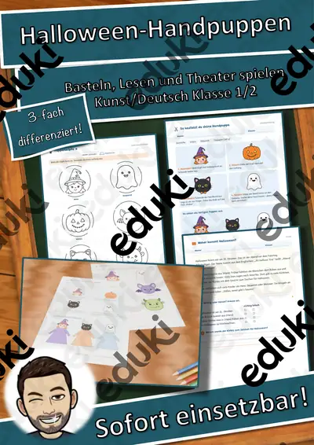
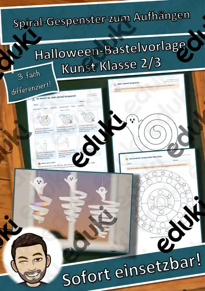
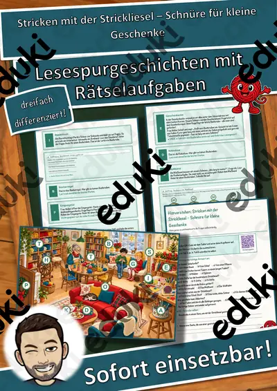
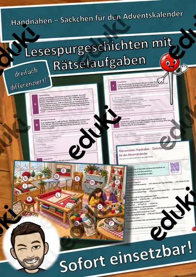
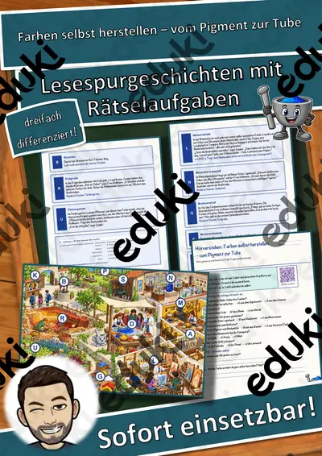

3D-Anhänger Sommer – Oktaeder, Diamant und Kugel zum Ausmalen und Basteln, 3-fach differenziert (Klasse 3/4)

3D-Anhänger Ostern – Oktaeder, Diamant und Kugel zum Ausmalen und Basteln, 3-fach differenziert (Klasse 3/4)

3D-Anhänger Fasching – Oktaeder, Diamant und Kugel zum Ausmalen und Basteln, 3-fach differenziert (Klasse 3/4)

3D-Anhänger Frühling – Oktaeder, Diamant und Kugel zum Ausmalen und Basteln, 3-fach differenziert (Klasse 3/4)

3D-Anhänger Herzen und Muttertag – Oktaeder, Diamant und Kugel zum Ausmalen und Basteln, 3-fach differenziert (Klasse 3/4)

3D-Anhänger Herbst – Oktaeder, Diamant und Kugel zum Ausmalen und Basteln, 3-fach differenziert (Klasse 3/4)

3D-Anhänger Winter – Oktaeder, Diamant und Kugel zum Ausmalen und Basteln, 3-fach differenziert (Klasse 3/4)

3D-Anhänger Advent – Oktaeder, Diamant und Kugel zum Ausmalen und Basteln, 3-fach differenziert (Klasse 3/4)

Igel im Laubnest – Klappnest basteln mit Sachtext Winterschlaf, 3-fach differenziert (Tiere im Herbst, Klasse 1/2)

Der Kürbis von innen – Klapp-Kürbis basteln und beschriften, 3-fach differenziert (Halloween/Herbst, Klasse 1/2)

Halloween-Handpuppen – Bastelvorlage mit Sachtext und Puppentheater, 3-fach differenziert (Klasse 1/2)

Fingerpuppen Wintertiere – Bastelvorlage mit Sachtext und Sprechaufgaben, 3-fach differenziert (Klasse 1/2)

Pop-up-Karten Weihnachten – Bastelvorlage mit Stufen-Pop-up, Motiven und Weihnachtsgruß, 3-fach differenziert (Klasse 3/4)

Wimpelkette Winter – Bastelvorlage mit Wintermotiven, Buchstaben WINTER und eigenen Wimpeln, 3-fach differenziert (Klasse 1–4)

Advents-Häuserstadt – Klassen-Adventskalender zum Basteln mit 24 Adventsaufgaben, 3-fach differenziert (Klasse 1–4)

Papier-Schneeflocken falten und schneiden – Winter-Bastelvorlage mit Sachtext, 3-fach differenziert (Klasse 2/3)

Fensterlaterne Sankt Martin – Laterne basteln mit Lesetext zur Legende, 3-fach differenziert (Klasse 1–3)

3D-Anhänger Halloween – Oktaeder, Diamant und Kugel zum Ausmalen und Basteln, 3-fach differenziert (Klasse 3/4)

Spiral-Gespenster zum Aufhängen – Halloween-Bastelvorlage mit Lesetext, 3-fach differenziert (Klasse 2/3)

Gespensterhaus aus meiner Hand – Halloween-Bastelvorlage mit Lesen und Schreiben, 3-fach differenziert (Klasse 1/2)

Krippenbau – eine Weihnachtskrippe entwerfen und gestalten – Lesespurgeschichte mit Rätselaufgaben (Klasse 8)

Salzteig-Anhänger – formen, trocknen, bemalen – Lesespurgeschichte mit Rätselaufgaben (Klasse 1)

Weben am Webrahmen – Kette, Schuss und Muster – Lesespurgeschichte mit Rätselaufgaben (Klasse 3)

Fröbelsterne und Papiersterne falten – Lesespurgeschichte mit Rätselaufgaben (Klasse 4)

Stricken mit der Strickliesel – Schnüre für kleine Geschenke – Lesespurgeschichte mit Rätselaufgaben (Klasse 3)

Handnähen – Säckchen für den Adventskalender – Lesespurgeschichte mit Rätselaufgaben (Klasse 5)

Wassily Kandinsky – wenn Farben klingen – Lesespurgeschichte mit Rätselaufgaben (Klasse 5)

Farben selbst herstellen – vom Pigment zur Tube – Lesespurgeschichte mit Rätselaufgaben (Klasse 7)

Formen in der Natur – Lesespurgeschichte mit Rätselaufgaben (Klasse 1)

Mein Traumhaus – Architektur für Kinder – Lesespurgeschichte mit Rätselaufgaben (Klasse 3)
Keine Materialien gefunden – versuch einen anderen Suchbegriff oder Filter.
Zwischen Werken und Kunstgeschichte
Kunst gelingt im Unterricht am besten, wenn Hände und Kopf gleichzeitig arbeiten. Dieses Angebot verbindet deshalb Gestaltungsvorlagen mit kurzen Sachtexten: Wer eine Figur faltet, liest dabei etwas über ihr Vorbild, und wer eine Epoche kennenlernt, bekommt eine Aufgabe, die sich in eine eigene Arbeit übersetzen lässt.
Klasse 1 bis 4: Falten, Schneiden und Gestalten
In der Grundschule überwiegen Bastelvorlagen mit Anleitung. „Igel im Laubnest“, „Der Kürbis von innen“ und „Fingerpuppen Wintertiere“ sind für die ersten beiden Jahrgänge gedacht, „Halloween-Handpuppen“ und „Wimpelkette Winter“ fügen sich in den Jahreslauf. Für die Klassen 3 und 4 gibt es die Reihe „3D-Anhänger“ zu Anlässen wie Schulanfang, Ostern und Fasching, bei der aus einem Blatt ein stehender Schmuck entsteht.
Klasse 5 bis 8: Techniken und Künstler
Ab Klasse 5 verschiebt sich der Schwerpunkt auf Verfahren und Vorbilder. „Handnähen“, „Gefäße aus Ton“, „Collage und Materialbild“ und „Masken gestalten“ stehen für das praktische Arbeiten, „Wassily Kandinsky“ ist ein erster Künstlerbezug. In Klasse 6 kommen „Mobiles“, „Illustration“ und „Kunst der Antike“ dazu. Klasse 7 deckt mit „Kalligrafie“, „Druckgrafik“, „Abstrakte Kunst“ und „Kunst der Renaissance“ ein breites Feld ab, Klasse 8 mit „Vincent van Gogh“, „Farbwirkung und Farbpsychologie“ und „Plakat und Typografie“.
Klasse 9 und 10: Gegenwart und Moderne
In den Klassen 9 und 10 stehen gegenwartsnahe Themen im Mittelpunkt: „Pop Art“, „Street Art und Graffiti“, „Kunst im öffentlichen Raum“ und „Produktdesign im Alltag“. Für Klasse 10 stehen „Surrealismus“, „Expressionismus“, „Das Bauhaus“, „Architektur der Gegenwart“ und „Bildsprache der Werbung“ bereit.
Häufige Fragen
Brauche ich besondere Materialien für die Bastelvorlagen?
Das hängt von der Vorlage ab. Welche Hilfsmittel nötig sind, steht in der Beschreibung des jeweiligen Materials, bevor du es einsetzt.
Kann ich die Künstlerporträts im Wechselunterricht oder Vertretungsstunden nutzen?
Ja, die Texte erklären sich selbst und enthalten Aufgaben. Eine Lehrkraft muss das Thema nicht vorab einführen.
Lässt sich das Material mit anderen Fächern verbinden?
Ja. Die Epochen- und Künstlertexte passen zu Geschichte und Deutsch, die Tierbasteleien zum Sachunterricht.
Gibt es Kunstmaterial auf Englisch oder Spanisch?
Zu Künstlerporträts gibt es spanische Künstler-Steckbriefe. Sie stehen auf der Seite zum Fach Spanisch.